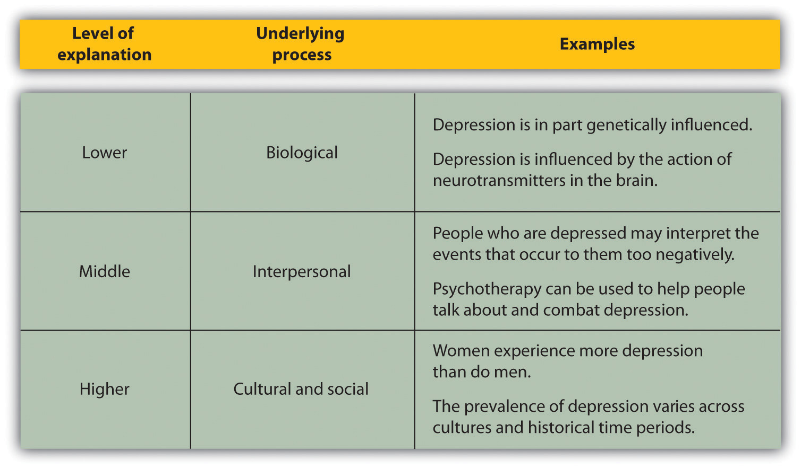

Despite the differences in their interests, areas of study, and approaches, all psychologists have one thing in common: They rely on scientific methods. Research psychologists use scientific methods to create new knowledge about the causes of behavior, whereas psychologist-practitioners, such as clinical, counseling, industrial-organizational, and school psychologists, use existing research to enhance the everyday life of others. The science of psychology is important for both researchers and practitioners.
In a sense all humans are scientists. We all have an interest in asking and answering questions about our world. We want to know why things happen, when and if they are likely to happen again, and how to reproduce or change them. Such knowledge enables us to predict our own behavior and that of others. We may even collect dataAny information collected through formal observation or measurement. (i.e., any information collected through formal observation or measurement) to aid us in this undertaking. It has been argued that people are “everyday scientists” who conduct research projects to answer questions about behavior (Nisbett & Ross, 1980).Nisbett, R. E., & Ross, L. (1980). Human inference: Strategies and shortcomings of social judgment. Englewood Cliffs, NJ: Prentice Hall. When we perform poorly on an important test, we try to understand what caused our failure to remember or understand the material and what might help us do better the next time. When our good friends Monisha and Charlie break up, despite the fact that they appeared to have a relationship made in heaven, we try to determine what happened. When we contemplate the rise of terrorist acts around the world, we try to investigate the causes of this problem by looking at the terrorists themselves, the situation around them, and others’ responses to them.
The results of these “everyday” research projects can teach us many principles of human behavior. We learn through experience that if we give someone bad news, he or she may blame us even though the news was not our fault. We learn that people may become depressed after they fail at an important task. We see that aggressive behavior occurs frequently in our society, and we develop theories to explain why this is so. These insights are part of everyday social life. In fact, much research in psychology involves the scientific study of everyday behavior (Heider, 1958; Kelley, 1967).Heider, F. (1958). The psychology of interpersonal relations. Hillsdale, NJ: Erlbaum; Kelley, H. H. (1967). Attribution theory in social psychology. In D. Levine (Ed.), Nebraska symposium on motivation (Vol. 15, pp. 192–240). Lincoln: University of Nebraska Press.
The problem, however, with the way people collect and interpret data in their everyday lives is that they are not always particularly thorough. Often, when one explanation for an event seems “right,” we adopt that explanation as the truth even when other explanations are possible and potentially more accurate. For example, eyewitnesses to violent crimes are often extremely confident in their identifications of the perpetrators of these crimes. But research finds that eyewitnesses are no less confident in their identifications when they are incorrect than when they are correct (Cutler & Wells, 2009; Wells & Hasel, 2008).Cutler, B. L., & Wells, G. L. (2009). Expert testimony regarding eyewitness identification. In J. L. Skeem, S. O. Lilienfeld, & K. S. Douglas (Eds.), Psychological science in the courtroom: Consensus and controversy (pp. 100–123). New York, NY: Guilford Press; Wells, G. L., & Hasel, L. E. (2008). Eyewitness identification: Issues in common knowledge and generalization. In E. Borgida & S. T. Fiske (Eds.), Beyond common sense: Psychological science in the courtroom (pp. 159–176). Malden, NJ: Blackwell. People may also become convinced of the existence of extrasensory perception (ESP), or the predictive value of astrology, when there is no evidence for either (Gilovich, 1993).Gilovich, T. (1993). How we know what isn’t so: The fallibility of human reason in everyday life. New York, NY: Free Press. Furthermore, psychologists have also found that there are a variety of cognitive and motivational biases that frequently influence our perceptions and lead us to draw erroneous conclusions (Fiske & Taylor, 2007; Hsee & Hastie, 2006).Fiske, S. T., & Taylor, S. E. (2007). Social cognition: From brains to culture. New York, NY: McGraw-Hill.; Hsee, C. K., & Hastie, R. (2006). Decision and experience: Why don’t we choose what makes us happy? Trends in Cognitive Sciences, 10(1), 31–37. In summary, accepting explanations for events without testing them thoroughly may lead us to think that we know the causes of things when we really do not.
A study reported in the Journal of Consumer Research (Brendl, Chattopadhyay, Pelham, & Carvallo, 2005)Brendl, C. M., Chattopadhyay, A., Pelham, B. W., & Carvallo, M. (2005). Name letter branding: Valence transfers when product specific needs are active. Journal of Consumer Research, 32(3), 405–415. demonstrates the extent to which people can be unaware of the causes of their own behavior. The research demonstrated that, at least under certain conditions (and although they do not know it), people frequently prefer brand names that contain the letters of their own name to brand names that do not contain the letters of their own name.
The research participants were recruited in pairs and were told that the research was a taste test of different types of tea. For each pair of participants, the experimenter created two teas and named them by adding the word stem “oki” to the first three letters of each participant’s first name. For example, for Jonathan and Elisabeth, the names of the teas would have been Jonoki and Elioki.
The participants were then shown 20 packets of tea that were supposedly being tested. Eighteen packets were labeled with made-up Japanese names (e.g., “Mataku” or “Somuta”), and two were labeled with the brand names constructed from the participants’ names. The experimenter explained that each participant would taste only two teas and would be allowed to choose one packet of these two to take home.
One of the two participants was asked to draw slips of paper to select the two brands that would be tasted at this session. However, the drawing was rigged so that the two brands containing the participants’ name stems were always chosen for tasting. Then, while the teas were being brewed, the participants completed a task designed to heighten their needs for self-esteem, and that was expected to increase their desire to choose a brand that had the letters of their own name. Specifically, the participants all wrote about an aspect of themselves that they would like to change.
After the teas were ready, the participants tasted them and then chose to take a packet of one of the teas home with them. After they made their choice, the participants were asked why they chose the tea they had chosen, and then the true purpose of the study was explained to them.
The results of this study found that participants chose the tea that included the first three letters of their own name significantly more frequently (64% of the time) than they chose the tea that included the first three letters of their partner’s name (only 36% of the time). Furthermore, the decisions were made unconsciously; the participants did not know why they chose the tea they chose. When they were asked, more than 90% of the participants thought that they had chosen on the basis of taste, whereas only 5% of them mentioned the real cause—that the brand name contained the letters of their name.
Once we learn about the outcome of a given event (e.g., when we read about the results of a research project), we frequently believe that we would have been able to predict the outcome ahead of time. For instance, if half of a class of students is told that research concerning attraction between people has demonstrated that “opposites attract” and the other half is told that research has demonstrated that “birds of a feather flock together,” most of the students will report believing that the outcome that they just read about is true, and that they would have predicted the outcome before they had read about it. Of course, both of these contradictory outcomes cannot be true. (In fact, psychological research finds that “birds of a feather flock together” is generally the case.) The problem is that just reading a description of research findings leads us to think of the many cases we know that support the findings, and thus makes them seem believable. The tendency to think that we could have predicted something that has already occurred that we probably would not have been able to predict is called the hindsight biasThe tendency to think that we could have predicted something that has already occurred that we probably would not have been able to predict..
All scientists, whether they are physicists, chemists, biologists, sociologists, or psychologists, use empirical methods to study the topics that interest them. Empirical methods include the processes of collecting and organizing data and drawing conclusions about those data. The empirical methods used by scientists have developed over many years and provide a basis for collecting, analyzing, and interpreting data within a common framework in which information can be shared. We can label the scientific methodThe set of assumptions, rules, and procedures that scientists use to conduct empirical research. as the set of assumptions, rules, and procedures that scientists use to conduct empirical research.
Although scientific research is an important method of studying human behavior, not all questions can be answered using scientific approaches. Statements that cannot be objectively measured or objectively determined to be true or false are not within the domain of scientific inquiry. Scientists therefore draw a distinction between values and facts. Values are personal statements such as “Abortion should not be permitted in this country,” “I will go to heaven when I die,” or “It is important to study psychology.” Facts are objective statements determined to be accurate through empirical study. Examples are “There were more than 21,000 homicides in the United States in 2009,” or “Research demonstrates that individuals who are exposed to highly stressful situations over long periods of time develop more health problems than those who are not.”
Because values cannot be considered to be either true or false, science cannot prove or disprove them. Nevertheless, as shown in Table 1.1 "Examples of Values and Facts in Scientific Research", research can sometimes provide facts that can help people develop their values. For instance, science may be able to objectively measure the impact of unwanted children on a society or the psychological trauma suffered by women who have abortions. The effect of capital punishment on the crime rate in the United States may also be determinable. This factual information can and should be made available to help people formulate their values about abortion and capital punishment, as well as to enable governments to articulate appropriate policies. Values also frequently come into play in determining what research is appropriate or important to conduct. For instance, the U.S. government has recently supported and provided funding for research on HIV, AIDS, and terrorism, while denying funding for research using human stem cells.
Table 1.1 Examples of Values and Facts in Scientific Research
| Personal value | Scientific fact |
|---|---|
| Welfare payments should be reduced for unmarried parents. | The U.S. government paid more than $21 billion in unemployment insurance in 2010. |
| Handguns should be outlawed. | There were more than 30,000 deaths caused by handguns in the United States in 2009. |
| Blue is my favorite color. | More than 35% of college students indicate that blue is their favorite color. |
| It is important to quit smoking. | Smoking increases the incidence of cancer and heart disease. |
Source: Stangor, C. (2011). Research methods for the behavioral sciences (4th ed.). Mountain View, CA: Cengage.
Although scientists use research to help establish facts, the distinction between values and facts is not always clear-cut. Sometimes statements that scientists consider to be factual later, on the basis of further research, turn out to be partially or even entirely incorrect. Although scientific procedures do not necessarily guarantee that the answers to questions will be objective and unbiased, science is still the best method for drawing objective conclusions about the world around us. When old facts are discarded, they are replaced with new facts based on newer and more correct data. Although science is not perfect, the requirements of empiricism and objectivity result in a much greater chance of producing an accurate understanding of human behavior than is available through other approaches.
The study of psychology spans many different topics at many different levels of explanationThe perspectives that are used to understand behavior., which are the perspectives that are used to understand behavior. Lower levels of explanation are more closely tied to biological influences, such as genes, neurons, neurotransmitters, and hormones, whereas the middle levels of explanation refer to the abilities and characteristics of individual people, and the highest levels of explanation relate to social groups, organizations, and cultures (Cacioppo, Berntson, Sheridan, & McClintock, 2000).Cacioppo, J. T., Berntson, G. G., Sheridan, J. F., & McClintock, M. K. (2000). Multilevel integrative analyses of human behavior: Social neuroscience and the complementing nature of social and biological approaches. Psychological Bulletin, 126(6), 829–843.
The same topic can be studied within psychology at different levels of explanation, as shown in Figure 1.3 "Levels of Explanation". For instance, the psychological disorder known as depression affects millions of people worldwide and is known to be caused by biological, social, and cultural factors. Studying and helping alleviate depression can be accomplished at low levels of explanation by investigating how chemicals in the brain influence the experience of depression. This approach has allowed psychologists to develop and prescribe drugs, such as Prozac, which may decrease depression in many individuals (Williams, Simpson, Simpson, & Nahas, 2009).Williams, N., Simpson, A. N., Simpson, K., & Nahas, Z. (2009). Relapse rates with long-term antidepressant drug therapy: A meta-analysis. Human Psychopharmacology: Clinical and Experimental, 24(5), 401–408. At the middle levels of explanation, psychological therapy is directed at helping individuals cope with negative life experiences that may cause depression. And at the highest level, psychologists study differences in the prevalence of depression between men and women and across cultures. The occurrence of psychological disorders, including depression, is substantially higher for women than for men, and it is also higher in Western cultures, such as in the United States, Canada, and Europe, than in Eastern cultures, such as in India, China, and Japan (Chen, Wang, Poland, & Lin, 2009; Seedat et al., 2009).Chen, P.-Y., Wang, S.-C., Poland, R. E., & Lin, K.-M. (2009). Biological variations in depression and anxiety between East and West. CNS Neuroscience & Therapeutics, 15(3), 283–294; Seedat, S., Scott, K. M., Angermeyer, M. C., Berglund, P., Bromet, E. J., Brugha, T. S.,…Kessler, R. C. (2009). Cross-national associations between gender and mental disorders in the World Health Organization World Mental Health Surveys. Archives of General Psychiatry, 66(7), 785–795. These sex and cultural differences provide insight into the factors that cause depression. The study of depression in psychology helps remind us that no one level of explanation can explain everything. All levels of explanation, from biological to personal to cultural, are essential for a better understanding of human behavior.
Figure 1.3 Levels of Explanation
Understanding and attempting to alleviate the costs of psychological disorders such as depression is not easy, because psychological experiences are extremely complex. The questions psychologists pose are as difficult as those posed by doctors, biologists, chemists, physicists, and other scientists, if not more so (Wilson, 1998).Wilson, E. O. (1998). Consilience: The unity of knowledge. New York, NY: Vintage Books.
A major goal of psychology is to predict behavior by understanding its causes. Making predictions is difficult in part because people vary and respond differently in different situations. Individual differencesThe variations among people on physical or psychological dimensions. are the variations among people on physical or psychological dimensions. For instance, although many people experience at least some symptoms of depression at some times in their lives, the experience varies dramatically among people. Some people experience major negative events, such as severe physical injuries or the loss of significant others, without experiencing much depression, whereas other people experience severe depression for no apparent reason. Other important individual differences that we will discuss in the chapters to come include differences in extraversion, intelligence, self-esteem, anxiety, aggression, and conformity.
Because of the many individual difference variables that influence behavior, we cannot always predict who will become aggressive or who will perform best in graduate school or on the job. The predictions made by psychologists (and most other scientists) are only probabilistic. We can say, for instance, that people who score higher on an intelligence test will, on average, do better than people who score lower on the same test, but we cannot make very accurate predictions about exactly how any one person will perform.
Another reason that it is difficult to predict behavior is that almost all behavior is multiply determined, or produced by many factors. And these factors occur at different levels of explanation. We have seen, for instance, that depression is caused by lower-level genetic factors, by medium-level personal factors, and by higher-level social and cultural factors. You should always be skeptical about people who attempt to explain important human behaviors, such as violence, child abuse, poverty, anxiety, or depression, in terms of a single cause.
Furthermore, these multiple causes are not independent of one another; they are associated such that when one cause is present other causes tend to be present as well. This overlap makes it difficult to pinpoint which cause or causes are operating. For instance, some people may be depressed because of biological imbalances in neurotransmitters in their brain. The resulting depression may lead them to act more negatively toward other people around them, which then leads those other people to respond more negatively to them, which then increases their depression. As a result, the biological determinants of depression become intertwined with the social responses of other people, making it difficult to disentangle the effects of each cause.
Another difficulty in studying psychology is that much human behavior is caused by factors that are outside our conscious awareness, making it impossible for us, as individuals, to really understand them. The role of unconscious processes was emphasized in the theorizing of the Austrian neurologist Sigmund Freud (1856–1939), who argued that many psychological disorders were caused by memories that we have repressed and thus remain outside our consciousness. Unconscious processes will be an important part of our study of psychology, and we will see that current research has supported many of Freud’s ideas about the importance of the unconscious in guiding behavior.